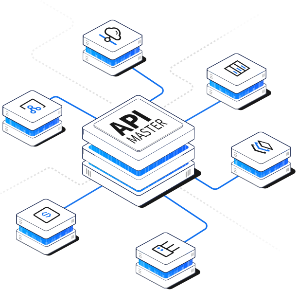

为开发者提供云服务
基于API技术向客户提供多领域、多场景的Sass服务；助力开发者提高生产效率，加快工作进程
生活服务
生活服务
生活服务
生活服务
生活服务
生活服务
生活服务
生活服务
生活服务
生活服务
慧集 / APIMaster
API集成中台包括：API设计、API开发、API测试、API发布、API网关、API市场等功能，支持API的鉴权、流控、熔断等，涵盖了API的全生命周期。

API智能接入
通过可视化界面配置，即可实现无代码、免开发快速接入
数据库生成API
无代码配置的方式将主流数据库输出为微服务API接口
API智能构建
多个API通过可视化的流程编排与业务逻辑重组，融合成新的API
API智能路由
根据入参属性进行智能分配，实现路由管理，控制API调用流向
简化API开发
助力开发者创建API、批量测试、跟踪开发进度、自动生成文档
API开放共享
将核心能力以API形式对外输出，赋能到多领域、多场景的应用程序中
风险管理部

苏州银行开发部

银联创新中心
源码时代

 增值电信业务经营许可证：蜀B2-20180596蜀ICP备15006450号-3营业执照
增值电信业务经营许可证：蜀B2-20180596蜀ICP备15006450号-3营业执照